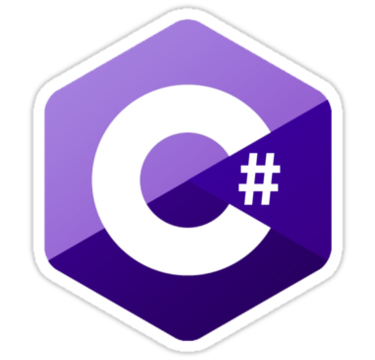
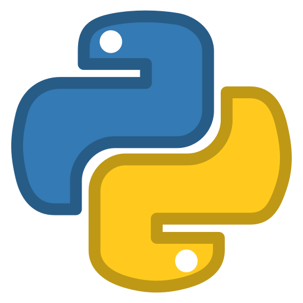
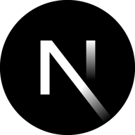
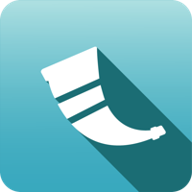
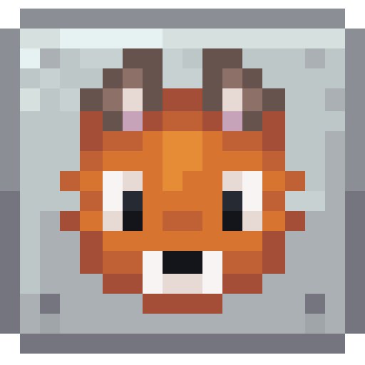
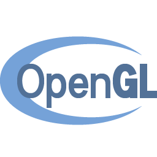
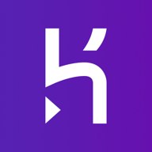
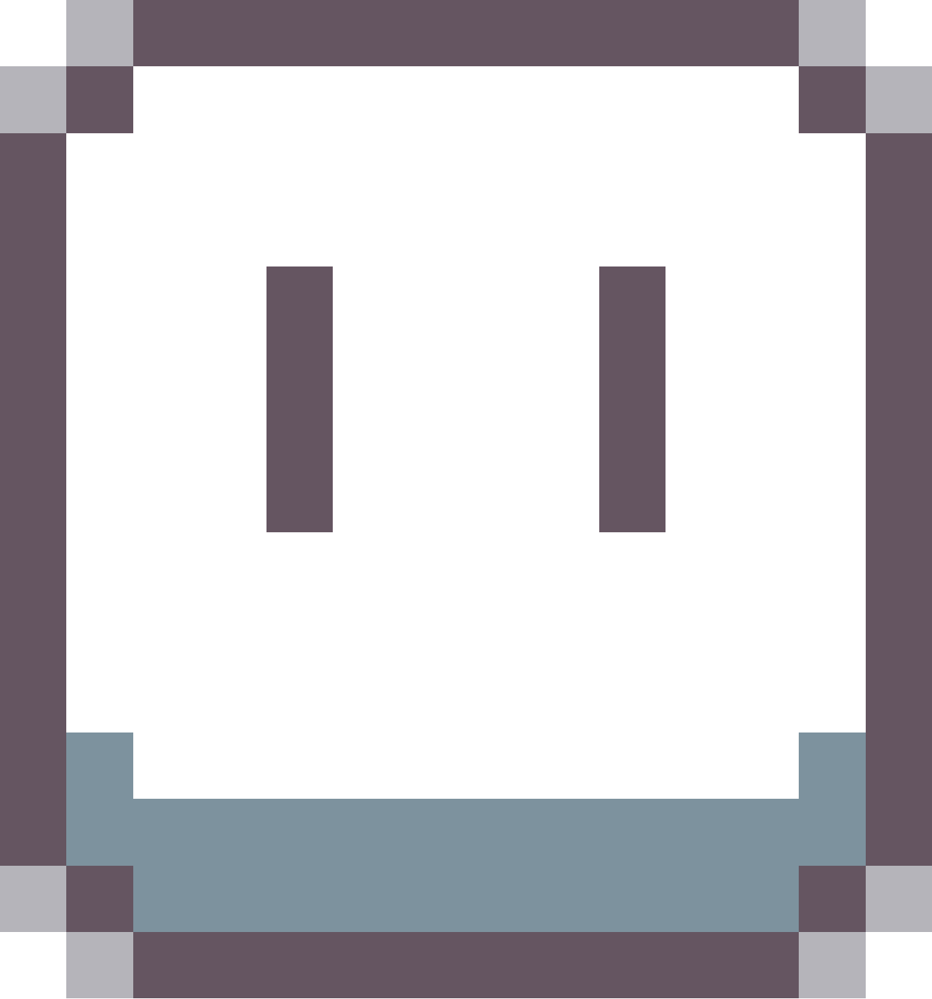

About
Hello! I'm a recent Computer Science and Data Science graduate from the University of California, Berkeley. I am currently looking for full-time, entry-level positions in Software Engineering. Feel free to contact me using any of the methods listed on the left for work inquiries!
I work with:
- Unity Game Engine
-

C# - Java
-

Python - C
- Rust
- TypeScript
- React
-

Next.js -

Flask -

Minecraft Forge -

GLSL - SteamVR
- Win32 API
-

Heroku -

Aseprite
Work Experience
Undergraduate Researcher, Levi Lab
Jan 2023 – May 2024
UC Berkeley · Unity, C#, SteamVR
- Developed a SteamVR obstacle course in Unity and C# that procedurally generates 10 randomized trials of 60 non-overlapping obstacles on a 46×46m field. Used to compare the spatial navigation of amblyopic patients and controls.
- Implemented a modified Dijkstra's algorithm in C# with a custom binary-heap priority queue over a clearance-aware roadmap to compute walkable optimal trajectories, and built a replay tool that renders patients' recorded binocular gaze and head motion.
- Produced C# eye, head, and hand tracking for the HTC Vive Pro Eye that logs 6 synchronized data streams at ~60 Hz across 30 randomized visual-search and reaching trials, with per-patient calibration from head height and arm length.
- Collaborated with optometrists to build a C# VR vision-threshold test using a binary search and a weighted 3-down/1-up staircase, estimating a patient's 80% acuity threshold to 1° precision across 4 stimulus modes.
Course Staff, CS 61B: Data Structures
Jan 2023 – Aug 2025
UC Berkeley EECS · Java, Jekyll, Python
- Created, reviewed, and taught course content for thousands of students in a Java-focused data structures course.
- Contributed to the course's new Jekyll website, letting staff publish content by editing Markdown and YAML instead of HTML.
- Automated staff pages with a Python script converting a 95-row staff-form CSV into per-staffer Markdown pages, and wrote an ImageMagick script standardizing every photo to 512×512.
- Built a topical exam-resources page from 20 past exams (623 entries across 40 topics) that students can filter by topic, difficulty, and question type.
- Worked with the misconduct team to hold meetings with the EECS department and resolve academic integrity cases.
Undergraduate Researcher, International Computer Science Institute
Sept 2022 – Dec 2022
FrameNet · Unity, C#, Python, Flask, Heroku
- Collaboratively developed a Unity story game to crowdsource annotated sentences for FrameNet, a major lexical-semantics database used in natural language processing systems.
- Overhauled the front end with C# and Unity UI, building an in-game writing editor that shows each frame's definition, lexical units, and examples alongside a 5-operation annotation interface for labeling core frame elements.
- Built a progression system in C# that tracks player points and unlocks 5 themed story regions on a world map.
- Integrated a Python and Flask back end deployed on Heroku that parses FrameNet 1.7 XML into JSON, serving randomly selected frames as story prompts.
Education
Waseda University
Aug 2025 – July 2026
Tokyo, Japan · International Liberal Studies
Relevant Coursework: Japanese, Virtual Earth (Climate Models)
University of California, Berkeley
Aug 2021 – May 2026
Berkeley, California · Computer Science, B.A · Data Science, B.A
Relevant Coursework: Data Structures, Machine Structures, Advanced Algorithms, Discrete Math, Probability, Optimization Models, Computer Security, Operating Systems, Distributed Systems, Machine Learning, Internet Architecture, Natural Language Processing, Computer Graphics
Projects
Some of the cool stuff I've made over the years.
- All
- Games
- Mods
- Web